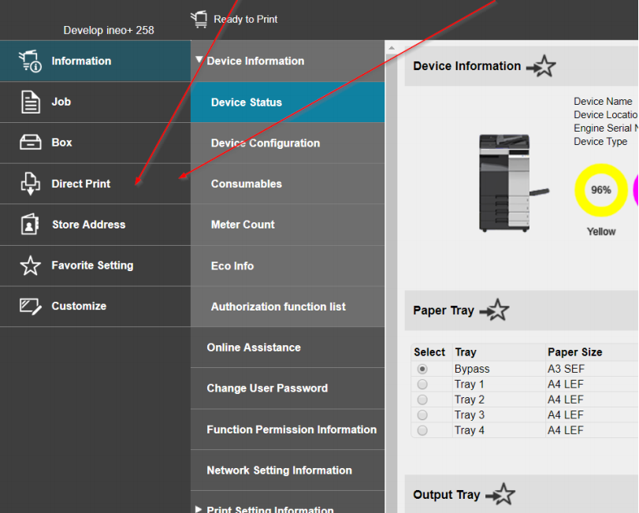
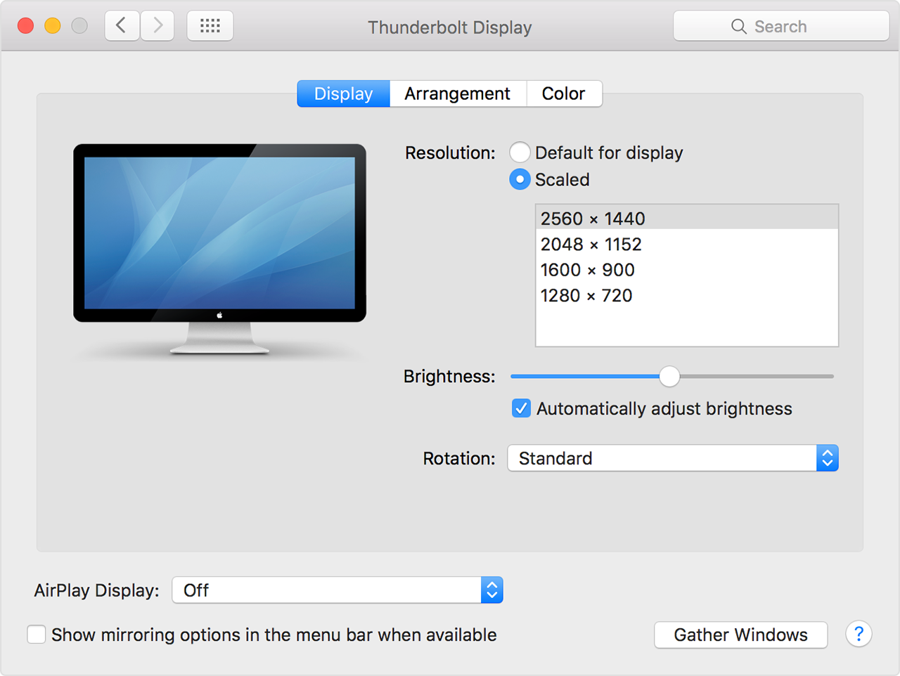
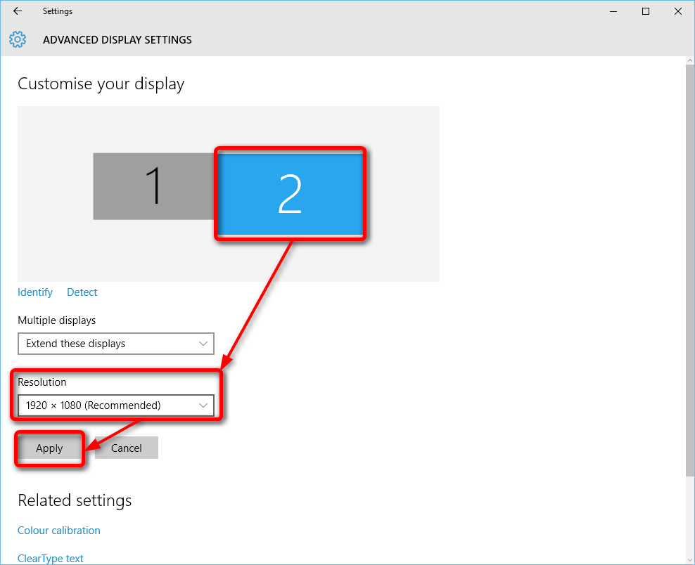

-
Print med USB
- Log ind på printeren på én af følgende måder
- Scan adgangsbrikken på printeren
- Log ind på printeren med fulde navn (samme som intranet) og løbenummer som kode
- Indsæt dit USB-stik i printerens USB-port (højre side af maskinen)
- Find dit dokument og vælg print på display'et
Print fra Hjemmeside
- Sørg for at være på "NOKO"-wifi
- Gå ind på http://10.0.2.212/wcd/top.html
- Log ind som "Registered User" med fulde navn (samme som intranet) og løbenummer som kode
- Vælg "Direct Print" i venstre side
- Vælg "Choose file" og upload det ønskede dokument (helst i PDF)
- Printeren printer nu i løbet af få minutter

-
Projektor Setup
- Tænd for projektoren med den lysegrå fjernbetjening
- Tilslut projektoren til computeren med enten HDMI- (sort) eller VGA-stikket (blå)
- De fleste computere genkender selv en projekt, men prøv ellers følgende
- Mac: klik på "Apple Menu"-knappen i øverste venstre hjørne → klik på "Systeminstillinger" → klik på "Skærm" → klik på "Find Skærm"
- Windows (3 muligheder): 1) Tjek "F"-knapperne for en genvej til skærm-deling. 2) Højreklik på skrivebordet → vælg "Skærmindstillinger" → klik på "Detektér". 3) Klik på meddelelsescenter i nederste højre hjørne → klik på "Projektor" → klik på "Duplikér Skærm"
- Hvis billedet går ud over siderne på lærredet, skal du vælge en 4:3-opløsning
- Mac: klip på "Apple Menu"-knappen i øverste venstre hjørne → klip på "Systeminstillinger" → klik på "Skærme" → klik på "Skærm" → hold "Option"-knappen nede mens du klikker på "Skaleret" → vælg en oplæsning (fx 1600x1200 eller 1440x1080) 
- Windows: højreklik på skrivebordet → vælg "Skærmindstillinger" → vælg projektoren (sandsynligvis skærm 2) → vælg på dropdown-menuen for "Opløsning" (fx 1600x1200 eller 1440x1080) 
- Hvis der kun findes ét display eller en 4:3 opløsning ikke er tilgængelig, skal skærmen nok sættes til "Udvid" i stedet for "Duplikér"
Lyd Setup
- Tislut anlægget via jack-stikket